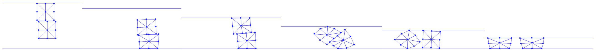

Friction Energy and Its Derivatives
With , , and precomputed for each friction point-edge pair, we can now conveniently compute the energy (Implementation 22.3.1), gradient (Implementation 22.3.2), and Hessian (Implementation 22.3.3) of the friction potential and add them into the optimization.
Implementation 22.3.1 (Friction energy value, FrictionEnergy.py).
# self-contact:
for i in range(0, len(mu_lambda_self)):
[xI, eI0, eI1, mu_lam, n, r] = mu_lambda_self[i]
T = np.identity(2) - np.outer(n, n)
rel_v = v[xI] - ((1 - r) * v[eI0] + r * v[eI1])
vbar = np.transpose(T).dot(rel_v)
sum += mu_lam * f0(np.linalg.norm(vbar), epsv, hhat)
When computing the gradient and Hessian, we used the relative velocity as an intermediate variable to make the implementation more organized. This approach is given by: where the derivatives of with respect to have exactly the same forms as in Frictional Contact.
Implementation 22.3.2 (Friction energy gradient, FrictionEnergy.py).
# self-contact:
for i in range(0, len(mu_lambda_self)):
[xI, eI0, eI1, mu_lam, n, r] = mu_lambda_self[i]
T = np.identity(2) - np.outer(n, n)
rel_v = v[xI] - ((1 - r) * v[eI0] + r * v[eI1])
vbar = np.transpose(T).dot(rel_v)
g_rel_v = mu_lam * f1_div_vbarnorm(np.linalg.norm(vbar), epsv) * T.dot(vbar)
g[xI] += g_rel_v
g[eI0] += g_rel_v * -(1 - r)
g[eI1] += g_rel_v * -r
Implementation 22.3.3 (Friction energy Hessian, FrictionEnergy.py).
# self-contact:
for i in range(0, len(mu_lambda_self)):
[xI, eI0, eI1, mu_lam, n, r] = mu_lambda_self[i]
T = np.identity(2) - np.outer(n, n)
rel_v = v[xI] - ((1 - r) * v[eI0] + r * v[eI1])
vbar = np.transpose(T).dot(rel_v)
vbarnorm = np.linalg.norm(vbar)
inner_term = f1_div_vbarnorm(vbarnorm, epsv) * np.identity(2)
if vbarnorm != 0:
inner_term += f_hess_term(vbarnorm, epsv) / vbarnorm * np.outer(vbar, vbar)
hess_rel_v = mu_lam * T.dot(utils.make_PSD(inner_term)).dot(np.transpose(T)) / hhat
index = [xI, eI0, eI1]
d_rel_v_dv = [1, -(1 - r), -r]
for nI in range(0, 3):
for nJ in range(0, 3):
for c in range(0, 2):
for r in range(0, 2):
IJV[0].append(index[nI] * 2 + r)
IJV[1].append(index[nJ] * 2 + c)
IJV[2] = np.append(IJV[2], d_rel_v_dv[nI] * d_rel_v_dv[nJ] * hess_rel_v[r, c])
After these implementations, we can finally run our compressing squares example with frictional self-contact (see: Figure 22.3.1). From the figure, we observe that once the two squares touch, the large friction between them and the ground restricts any sliding. This causes the squares to rotate counter-clockwise as they are compressed by the ceiling.
